![]()
{kind=link}
05:00
Mastering the Literature
Distill a Scientific Domain with Bibliometric Analysis in R
Wednesday, the 12th of February, 2025
Overview
Background
Databases
A Shiny Approach
A Scripted Approach
Background
Why do I feel so bad all the time?
What is bibliometrics?
Why bibliometrics can help?
A foundation is key to pushing boundaries
Background
Graduate school
- Understand what is known across a domain
- Identify and explain something that is unknown (Preferably, coherently)
- Ultimately, unstructured with many possible options
Improve personal professional care with systematic approaches
Background
Feelings of:
- guilt
- all-consuming prioritization
- wealth disparity
- depression
- anxiety
- stupidity
- uncertainty and disconnection (I.e. Lost)
- urgency and pressure (I.e. time slipping away
- regret
- stress
- isolation
Solutions?
- grin and bear it
- too general to fully address the scope
The valley of despair is the graduate school experience
Background
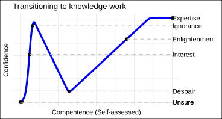
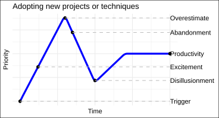
The vallies are peak imposter syndrome
Background

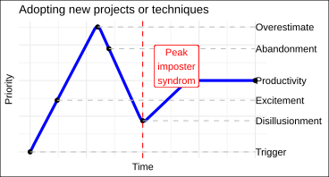
Bibliometrics can rapidly build your compentence in a domain
Bibliometrics can expose you to the techniques of a domain
Bibliometrics provides an accesible framework for equitable scholarship
Background
Bibliometrics uses
- Archival database
- Article metadata
- Statistical analysis
Bibliometrics answers
- where the field has grown from
- its most relevant articles
- its emerging topics
Bibliometrics yields networks based on references
Background
Minimize your time in the Valley with bibliometrics
Background
- General bibliometric science yields:
- A solid foundation of the necessary concepts
- The questions answered by the field
- Some open areas of discovery within the field
- My proposed use of a bibliometric framework
- Use reproducible methods
- for systematic evaluation
- in a quantifiable way!
- Ultimately, ending with justifiable literature for your needs
Databases
- Basics of literature search
- Which databases to use
- Searching techniques
- Sample size
- Exporting search metadata
- Filtration techniques
Your database choice will affect your results
Databases
Databases focus on different levels of content selection, curation, and comprehensiveness.
- Web of Science (WoS)
- Scopus
- PubMed
- Dimensions
- CrossRef
- Semantic Scholar
- Microsoft Academic
- Lens.org
- Cochran Library
- Google Scholar
“Scopus and WoS compliment each others as neither resource is all inclusive”
Your database choice will affect your results
Databases
Databases focus on different levels of content selection, curation, and comprehensiveness.
- Web of Science (WoS)
- Scopus
- PubMed
- Dimensions
- CrossRef
- Semantic Scholar
- Microsoft Academic
- Lens.org
- Cochran Library
- Google Scholar
“Scopus and WOS compliment each others as neither resource is all inclusive”
Signing up, search and exporting can be nuianced
Databases
- Register with university email for Scopus and WoS access when off university wifi/library VPN
- PubMed does not require registration at all
- Scopus (Multidisciplinary)
- 82.4 million records
- 1788 – present
- bibtex
- full record
- 20,000 export limit
- Scopus (Multidisciplinary)
- WoS (Multidisciplinary)
- Core, 79 million
- 1900 - present
- plaintext or bibtex
- custom selection
- 1000 export limit
- WoS (Multidisciplinary)
- PubMed (Only life science and biomedical)
- 35 million
- 1966 - present (*1809)
- plaintext
- pubmed format
- 10,000 export limit
- PubMed (Only life science and biomedical)
Vocabulary is vital for a good search!
Databases
controlled vocabulary thesaurus
- Medical Subject Headings (MeSH) Tree
- Search “controlled vocabulary thesaurus for [biology]”
Try ChatGPT?
What are keywords for [microbial metagenomic metabolomic metabolite cancer research]?
Create a controlled vocabulary for [microbial metagenomic metabolomic metabolite cancer research].
Wildcards allow the capture of many individual words
Databases
| Wildcard Charater | Definition | Example | Result |
|---|---|---|---|
| * | Any amount of character/s to include zero | *man |
man, woman, human, superman, superwoman, {etc} |
| ? | Any single character | wom?n |
woman, women |
| $ (WoS only) | Any single or no character | $$man |
woman, man, human |
Boolean operators are vital to focus a corpus
Databases
| Operator | Affect on Search | Definition | Example |
|---|---|---|---|
| AND | Narrows | Intersects all terms separated by operator | migration AND butterfl* |
| OR | Broadens | Unites any and all terms separated by operator | migration OR butterfl* |
| NOT | Narrows | Excludes term following operator | migration AND bird* NOT butterfl* |
| NEAR/x(WoS) | Narrows | Find terms joined by operator near each other by \(x\) words | America NEAR/10 butterfly |
| SAME(WoS) | Narrows | Find terms joined by operator if in the same sentence | America SAME butterfly |
| W/n(Scopus) | Narrows | Find terms joined by operator within each other by \(n\) words | American W/10 butterfly |
| Pre/n(Scopus) | Narrows | Find terms where preceeding term to operator is within \(n\) words of following term | American Pre/3 butterfly |
Searching by phrase may simplify a search
Databases
| Phrase type | Example | Search |
|---|---|---|
| Loose | "phrase searching" |
phrase search, phrase searches, phrase searching |
| Exact(Scopus) | {phrase searching} |
phrase searching |
Combine all search techniques for the best corpus results
Databases
WoS = 184
ALL=((“colorectal cancer*” OR “colorectal neoplas*” OR “adenomatous polyposis coli” OR “colon* neoplas*” OR “rectal neoplas*” OR “hereditary nonpolypo*”) AND (“metagenom*” AND “metabol*”))
Scopus = 367 & PubMed = 248
TITLE-ABS-KEY ( “colorectal cancer*” OR “colorectal neoplas*” OR “adenomatous polyposis coli” OR “colon* neoplas*” OR “rectal neoplas*” OR “hereditary nonpolypo*” AND “metagenom*” AND “metabol*” )
Combine all search techniques for the best corpus results
Databases
WoS = 184
ALL=((“colorectal cancer*” OR “colorectal neoplas*” OR “adenomatous polyposis coli” OR “colon* neoplas*” OR “rectal neoplas*” OR “hereditary nonpolypo*”) AND (metagenom*” AND “metabol*”))
Scopus = 367 & PubMed = 248
TITLE-ABS-KEY ( “colorectal cancer*” OR “colorectal neoplas*” OR “adenomatous polyposis coli” OR “colon* neoplas*” OR “rectal neoplas*” OR “hereditary nonpolypo*” AND “metagenom*” AND “metabol*” )
Sample Size goals of 500 - 1500 articles
Databases
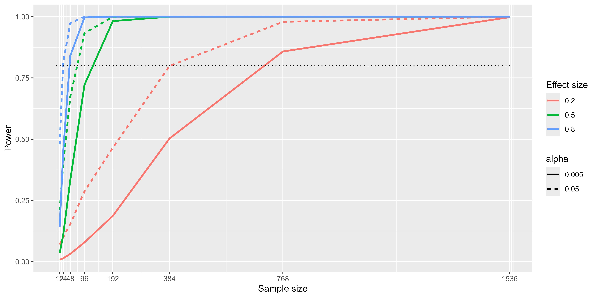
Results from power simulation, showing power as a function of sample size, with effect sizes shown as different colors, and alpha shown as line type. The standard criterion of 80 percent power is shown by the dotted black line.
Build a corpus for your interests
Databases
10:00
| Wildcard Charater | Definition | Example | Result |
|---|---|---|---|
| * | Any amount of character/s to include zero | *man |
man, woman, human, superman, superwoman, {etc} |
| ? | Any single character | wom?n |
woman, women |
| $ (WoS only) | Any single or no character | $$man |
woman, man, human |
| Operator | Affect on Search | Definition | Example |
|---|---|---|---|
| AND | Narrows | Find all terms separated by operator | migration AND butterfl\* |
| OR | Broadens | Find any and all terms separated by operator | migration OR butterfl\* |
| NOT | Narrows | Excludes term following operator | migration AND bird\* NOT butterfl\* |
| NEAR/x(WoS) | Narrows | Find terms joined by operator near each other by \(x\) words | America NEAR/10 butterfly |
| SAME(WoS) | Narrows | Find terms joined by operator if in the same sentence | America SAME butterfly |
| W/n(Scopus) | Narrows | Find terms joined by operator within each other by \(n\) words | American W/10 butterfly |
| Pre/n(Scopus) | Narrows | Find terms where preceeding term to operator is within \(n\) words of following term | American Pre/3 butterfly |
| Phrase type | Example | Search |
|---|---|---|
| Loose | "phrase searching" |
phrase search, phrase searches, phrase searching |
| Exact(Scopus) | {phrase searching} |
phrase searching |
Filtration techniques are whatever work for you
Databases
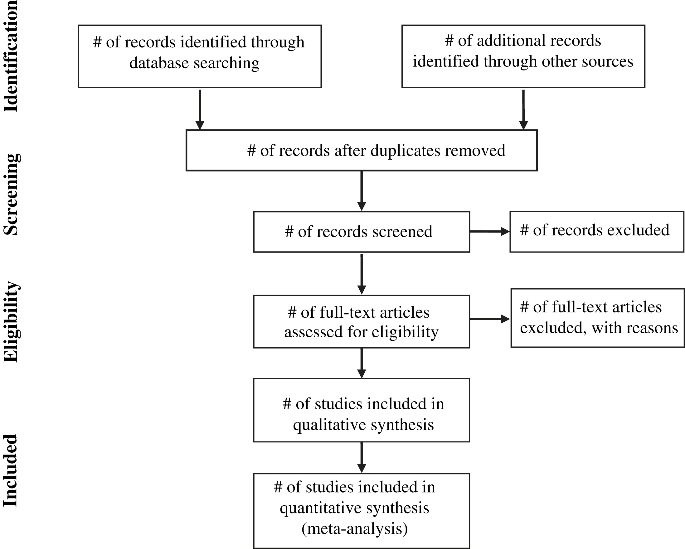
Literature filtration
- Prisma
Filtration techniques are whatever work for you
Databases

Literature filtration
- Prisma
- 80:20
Filtration techniques are whatever work for you
Databases
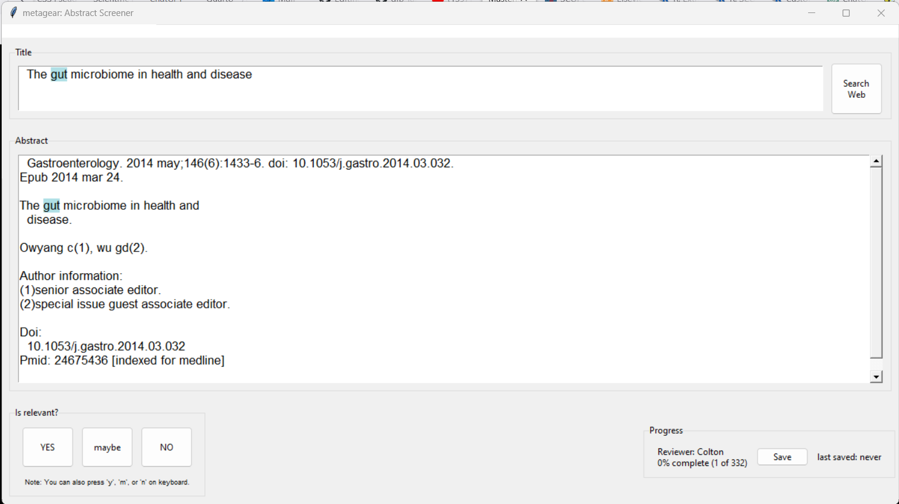
Literature filtration
- Prisma
- 80:20
metagear?
A Shiny Approach
- The Bibliometrix package
- Biblioshiny interface
- Some standard bibliometric plots
Install, load, and run biblioshiny() in almost no code
A Shiny Approach
Your console should look like…
A Shiny Approach
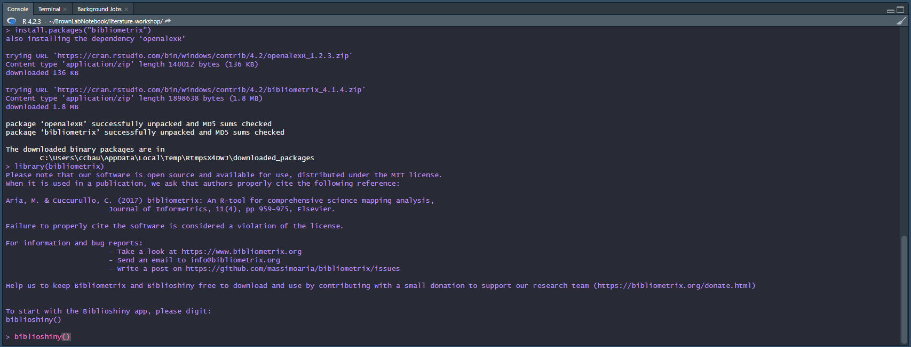
Image of biblioshiny script in console
This is the landing page every time
A Shiny Approach
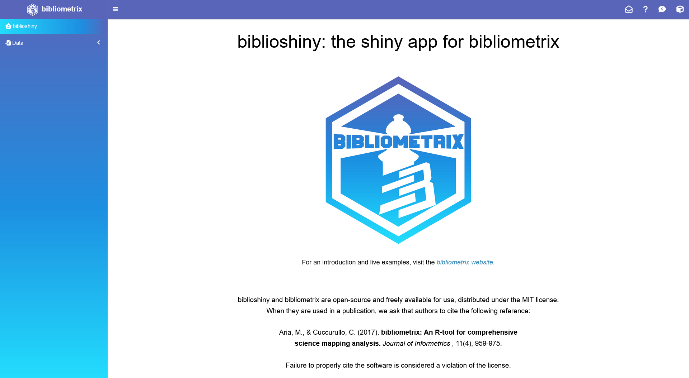
Image of biblioshiny landing page
Loading allows only a single file…
A Shiny Approach
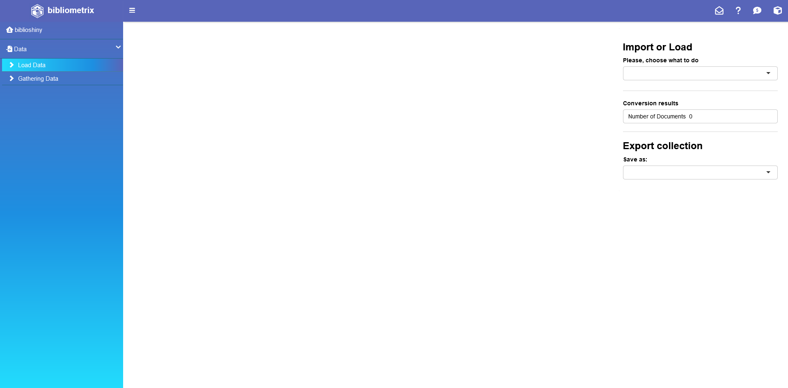
Image of biblioshiny ready to load data
Metadata report of my corpus
A Shiny Approach
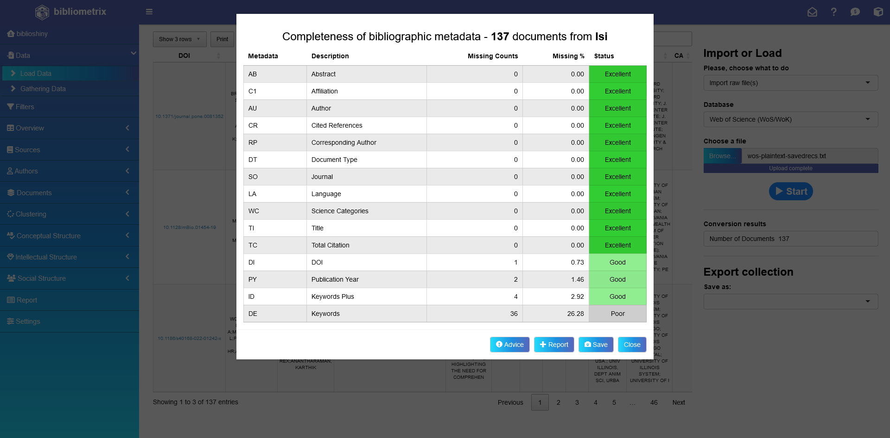
Image of the biblioshiny loaded data report
Loaded data in tabular form
A Shiny Approach
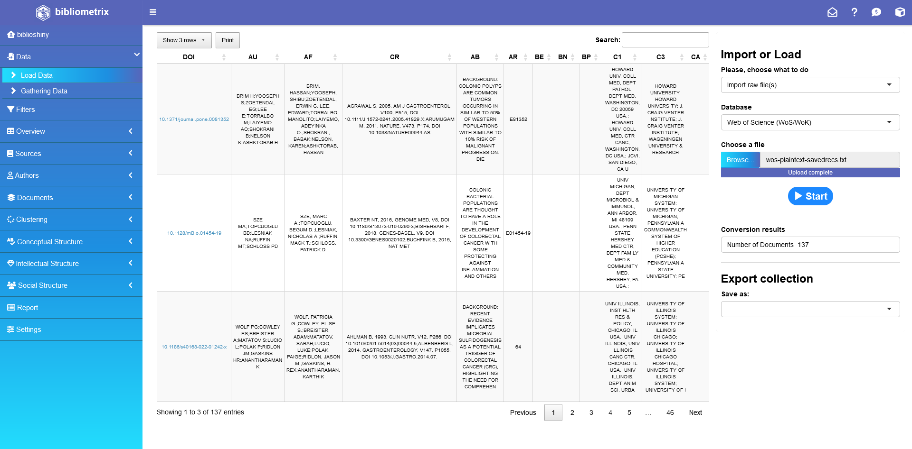
Image of biblioshiny with data loaded
Relavant sources to include in my RSS feeds
A Shiny Approach
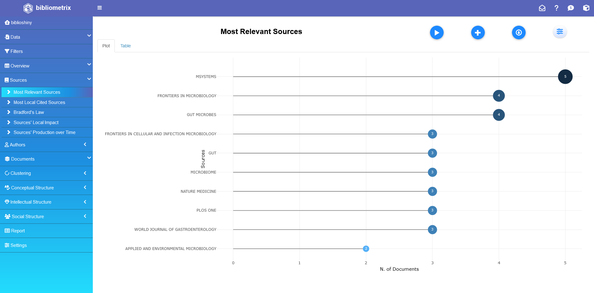
Image of biblioshiny most relevant sources lolli pop plot
The most cited documents across the database
A Shiny Approach
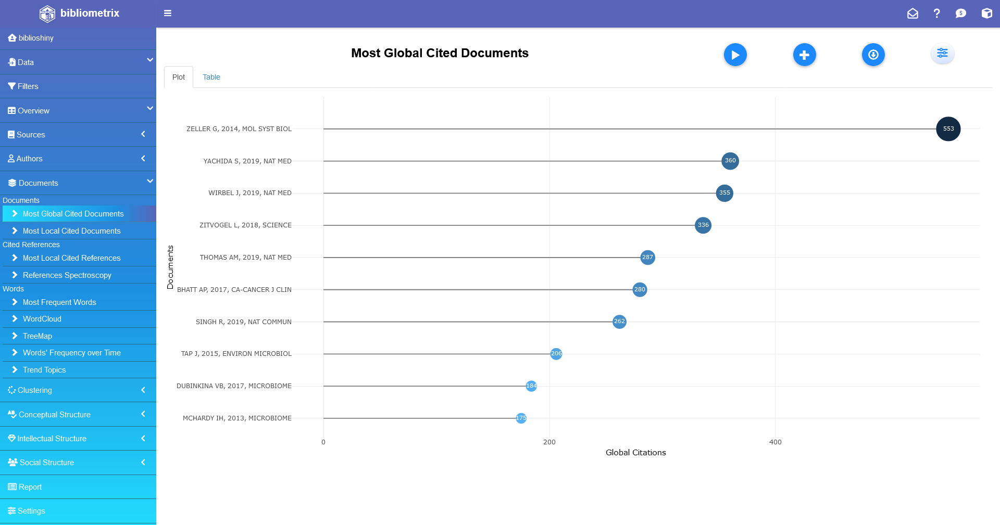
Image of biblioshiny most globally cited lolli pop plot
A normalized citation count allows for more current articles
A Shiny Approach
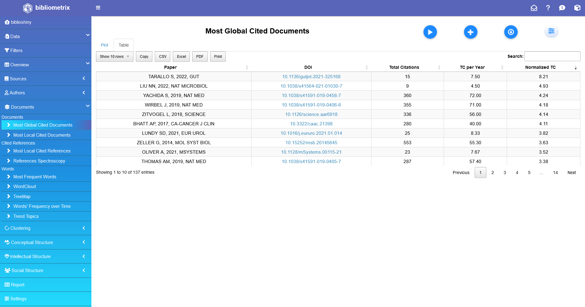
Image of biblioshiny most globally cited table organized by normalized total citations (NTC)
A longitudinal network focuses in on local seminal papers
A Shiny Approach
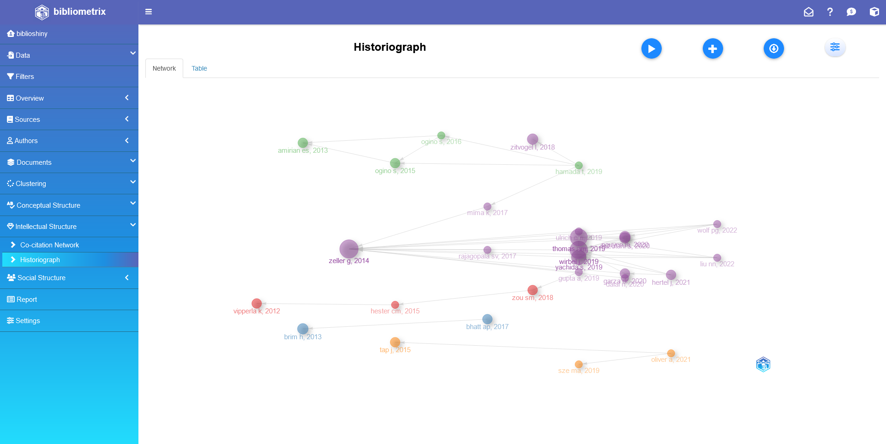
Image of biblioshiny historiograph plot
Peaks within the 5 year median may be cornerstone papers
A Shiny Approach
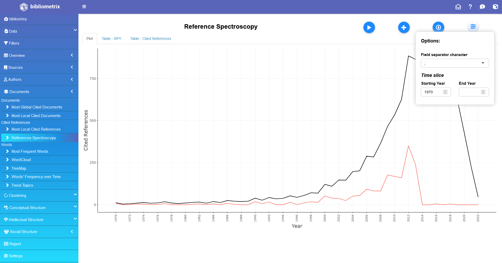
Image of biblioshiny reference publication year spectroscopy plot (1970-2022)
At a small peak no papers stand out
A Shiny Approach
Image of biblioshiny reference publication year spectroscopy table (2000)
At greater peaks, some articles outlie the norm
A Shiny Approach
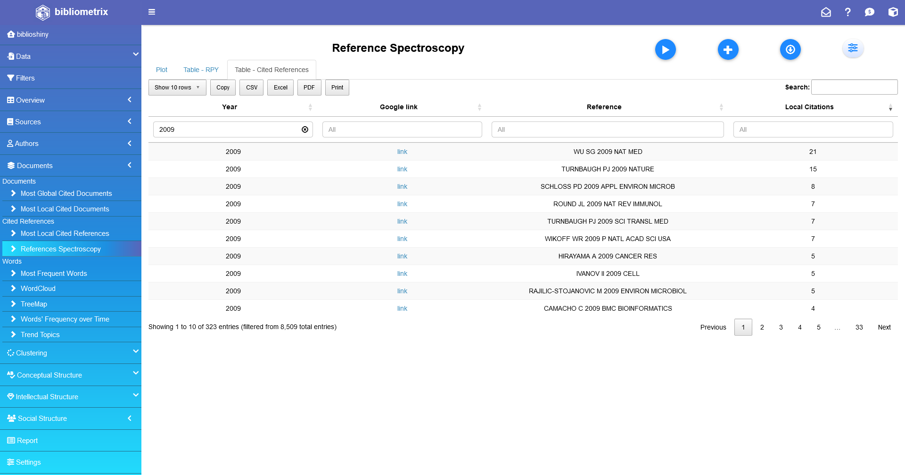
Image of biblioshiny reference publication year spectroscopy table (2009)
At greater peaks, some articles outlie the norm
A Shiny Approach
Image of biblioshiny reference publication year spectroscopy table (2012)
Explore the corpus you have created
A Shiny Approach
- First four sections - Domain focus at four different analyses
- For example, the
Sourcessection is a great level for refining the journals in your RSS feed!
- For example, the
- Last three sections - Knowledge structures for rapid synthesis of understanding
- For example, the
Conceptual Structureis a great section for rapidly identifying key themes, trends, and keywords that are best to fundamentally understand or include in your controlled vocabulary thesuarus!
- For example, the
10:00
A Scripted Approach
Replicate
biblioshiny()plotsExamine, plot, and summarize data
Deeply understand some functions
Integrate R script output with Zotero
Summary
You have learned:
- Why the struggle exists
- One method to alleviate some pressure
- Databases
- Bibliographic databases
- Search engine techniques
- Sampling size
- Exportation and Filtration
- Bibliometric Analysis
- One tool
- Two approaches
- Standard data analysis in R
- Interoperation with RSS and Reference management
Acknowledgments
“Alone we can do so little; together we can do so much.”
Helen Keller
- C. Titus Brown
- Pamela Reynolds
- Bryshal Moore
- Megan Van Noord
- DIB Lab members
- DataLab members